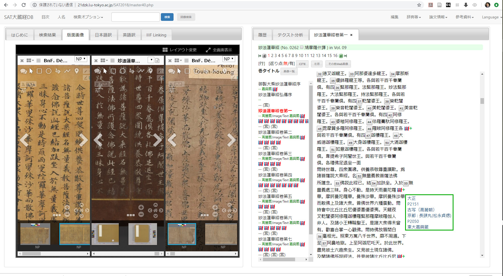
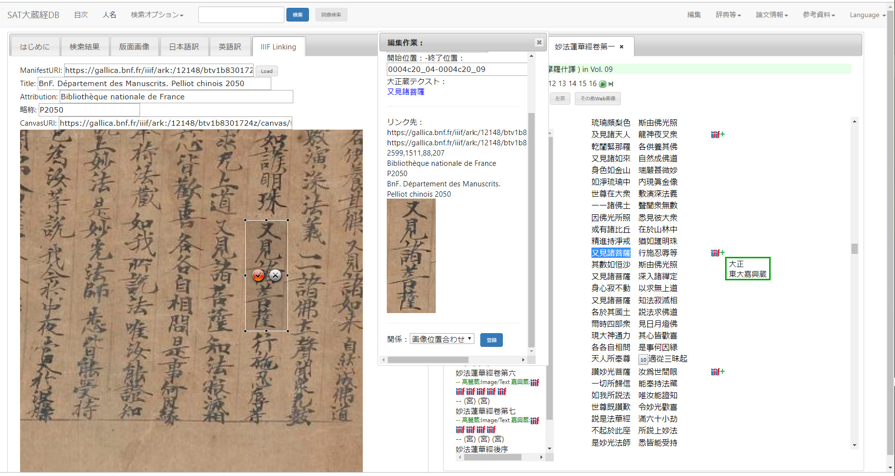

Digital scholarly edition (henceforth, DSE) has been gradually improved as structured electronic texts through TEI (Text Encoding Initiative) Guidelines[1] since around three decades ago in order to find better solution for not only digital humanities but also humanities in general. Emergence of IIIF (International Image Interoperability Framework)[2] has recently been providing new possibilities to it via its interoperable nature. This presentation will report on an improvement of our collaborative digital scholarly edition as a use case of utilizing IIIF which enables us to manipulate hi-resolution images provided from many cultural institutions in the world such as Gallica, Cambridge University Library, National Diet Library of Japan, and Kyoto University for DSE.
